Tokyo, Mt. Fuji & Hakone (Wed Nov 25 – Wed Dec 2, 2026)
Jet-lag staircase for Chicago travelers: unhurried mornings, weekday mountains & coasters, protected afternoon recharge breaks, and confirmed cultural bookings.
2 Adults · Strictly No Pork & No Alcohol
All Currently Open Activities & Hotels Booked ✅
Protected 2–4 PM Recharge Daily
📊 8-Day Trip at a Glance
| Day | Scheduled Flow & Confirmed Bookings |
|---|---|
|
Wed Nov 25
Arrival · Shibuya
|
Lands Haneda T3 (17:45) → ✅ $55 Agoda Private Transfer (19:30) → ✅ JR-East Hotel Mets Shibuya (Nights 1–5) → LIFE Supermarket (20:45) |
|
Thu Nov 26
Mt. Takao & Shinjuku
|
Leave Hotel 07:15 → Mt. Takao Cable Car (08:45) → Trail 1 Summit (🌟 Optional: Trail 4 Bridge) → Summit Soba → Yakuo-in Temple → 14:00–16:30 Hotel Nap → 17:00 Omoide Yokocho & Shinjuku Lights |
|
Fri Nov 27
Mt. Fuji & Fuji-Q
|
Leave Hotel 07:25 → ✅ Booked 08:15 Highway Coach (1151) → Mt. Fuji Ropeway → 12:05 6-Min ($8) Taxi to Fuji-Q → 13:00 Zokkon & 13:40 Fujiyama → 14:00 Lunch → 15:15 Zokkon Rd 2 / Fuji Airways → ✅ 16:18 Return Coach (1118) |
|
Sat Nov 28
Yanaka Old Town, 12:00 Sushi & Shibuya
|
Nezu Torii & Yanaka Ginza (09:30–11:20) → 10-min GO Taxi / 20-min Subway → ✅ 12:00 Sushi Class (217172P1) → 14:00–16:15 Hotel Nap at JR Mets → ✅ 16:40 SHIBUYA SKY → Shibuya Crossing → Ebisu |
|
Sun Nov 29
Harajuku, Kimono & Tea, Asakusa Cafe, Sumo
|
Meiji Jingu (10:00) → Takeshita Crepes & Omotesando (12:25 Ginza Line) → ✅ 13:30 Maikoya Kimono & Tea (51440P108) → 15:00–16:00 Senso-ji & Kimono Change → 16:00–16:45 Asakusa Cafe Break (🌟 Optional: Rikugien) → ✅ 17:30 Shinjuku Sumo (5610033P1) |
|
Mon Nov 30
Hakone Loop & Mizunoto
|
07:30 Wake + 60-Min Routine → 08:30 JR Mets Check-Out & $6 Taxi Bag Drop at lyf Shibuya → ✅ 10:00 Romancecar (#00058) → Hakone Loop → Cedar Trail (🌟 Optional: Narukawa Lounge / Open-Air Museum) → ✅ 16:00 Mizunoto (14:00–17:00 Shuttle) |
|
Tue Dec 1
Bullet Train, Ramen Street, Samurai, Kappabashi & Shibuya
|
Morning Balcony Onsen & 09:00 Check-Out → ✅ Booked 11:14 Kodama 808 Bullet Train (Res #2000 · Car 12 Seats 12-D/E) → 11:55 Ramen Street (Soranoiro NIPPON) → 12:55 12-Min ($14) Taxi → ✅ Booked 13:30 Samurai Museum (51440P80) → 14:35 Kappabashi → 15:35 Free Time → Unagi & Lights |
|
Wed Dec 2
Sleep In, Isetan, Shinjuku Gyoen & 2:00 PM Transfer
|
09:00 Sleep In → 10:15 lyf Check-Out & Free Bag Hold → 10:50 Isetan Depachika → 11:30–12:40 Shinjuku Gyoen Picnic → 13:20 Back at lyf (40m Buffer) → ✅ 14:00 Agoda Private Transfer ($55) → DL276 16:50 HND T3 |
🗓️ Day-by-Day Photos & Timed Schedule
Wed Nov 25
Arrival in Tokyo & Check-In at JR-East Hotel Mets Shibuya
📍 Haneda Airport → Shibuya (JR-East Hotel Mets Shibuya)
Land at Haneda Terminal 3 at 17:45, take your booked $55 Agoda Private Transfer door-to-door to JR-East Hotel Mets Shibuya (Nights 1–5), stock your in-room fridge at LIFE Supermarket 2 minutes away, and get a full night's sleep.
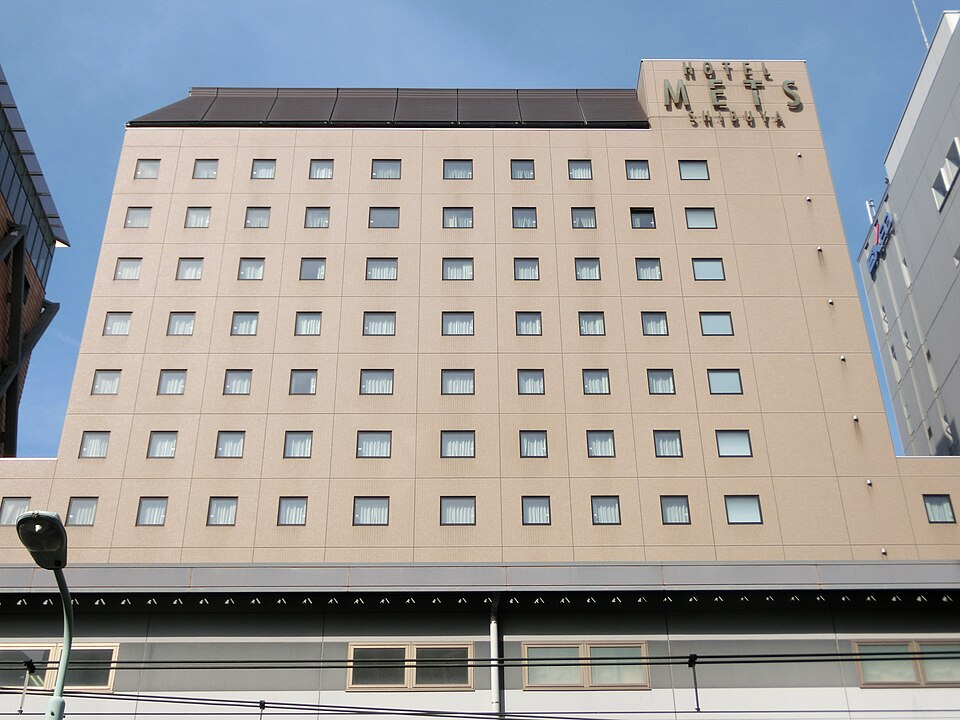
JR-East Hotel Mets Shibuya
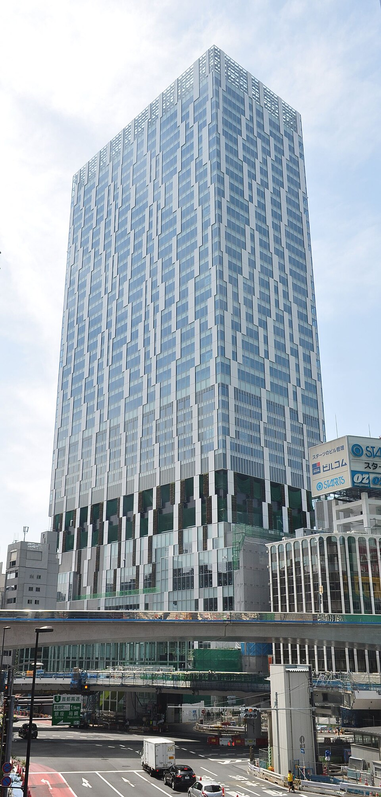
Shibuya Stream Riverwalk
Timed Schedule
-
17:45 Land at Haneda Airport (Terminal 3) ☀️ DaytimeClear immigration and customs using your Visit Japan Web QR codes (takes about 60–75 minutes) and withdraw ¥15,000 in cash at a 7-Eleven ATM in the arrival lobby.📋 Required: Pre-trip prep only (no separate ticket): Have your physical passports and Visit Japan Web QR codes ready, Apple Wallet Suica loaded with ¥8,700 (~$57) on each phone, and Data Roaming ON (your Xfinity Premium Unlimited includes 10GB 5G in Japan at $0 extra; wife's T-Mobile $50 10-Day / 15GB International Pass).
-
19:30 ✅ Booked: Agoda Private Airport Transfer (Haneda T3 → JR-East Hotel Mets Shibuya, $55) + Hotel Check-In (Nights 1–5) ☕ Dedicated RestMeet your pre-booked flight-tracked driver at Haneda Terminal 3 for a 25-minute door-to-door ride straight to JR-East Hotel Mets Shibuya (zero luggage hauling after your 14-hour flight!).📋 Required: ✅ Both Transfer ($55 on Agoda, 4.9★, flight-tracked for 2 Adults) AND Hotel ($1,213 w/ tax for Nights 1–5, Nov 25–30: 'Single for 2 People - Non-Smoking Residential Style' — renovated May 2025 with in-room microwave, 2-door freezer-fridge, and rain-shower booth) are Booked & Paid! Check your Agoda voucher on landing for the driver's meeting point, and show both passports at the 3rd-floor hotel desk.
-
20:45 Night-1 Light Breakfast & Backup Lunch Stock-Up: LIFE Supermarket Shibuya Higashi (2-Min Walk, Open Till Midnight) 🏮 Sunset & NightWalk 2 minutes east across Meiji-dori to LIFE Supermarket Shibuya Higashi (1-26-22 Higashi, open until 24:00 midnight) to stock your in-room 2-door freezer-fridge and microwave. Skip buying coffee/creamer (your JR Mets 3F Lounge has free freshly brewed espresso & creamer!). Grab light morning breakfast staples (Pasco Chojuku English muffins, Kiri cream cheese, plain Greek/Bulgaria yogurt with zero gelatin, strawberries/bananas, salted boiled eggs) and 2–3 quick microwavable lunch backups (Salmon/Tuna-mayo onigiri).📋 Required: Nothing (walk right in and pay with Suica, Apple Pay, credit card, or cash; request free plates & cutlery at JR Mets 3F front desk).
Thu Nov 26
Mt. Takao Autumn Hike, Afternoon Nap & Omoide Yokocho Lanterns
📍 West Corridor: Shibuya / Shinjuku ↔ Mt. Takao
Use your natural Day-2 early wake-up to leave JR Mets Shibuya at 07:15 AM and ride the 08:45 Mt. Takao Cable Car without crowds, hike Trail 1 to the 599m summit and Yakuo-in Temple (with the Trail 4 suspension bridge as an optional add-on if time permits), return to your hotel by 14:00 for a full 2.5-hour recharging nap across the 2:30 PM jet-lag dip, and explore Shinjuku's glowing lantern alleys at 17:00.
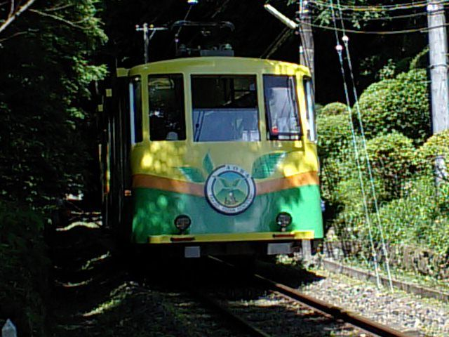
Mt. Takao Cable Car
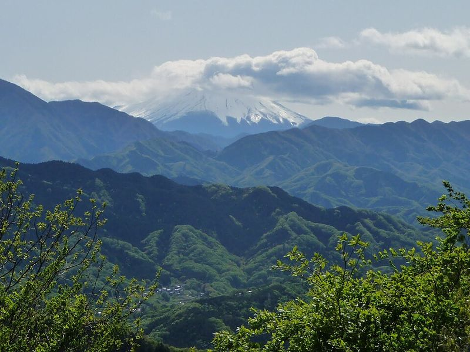
Mt. Fuji from Mt. Takao
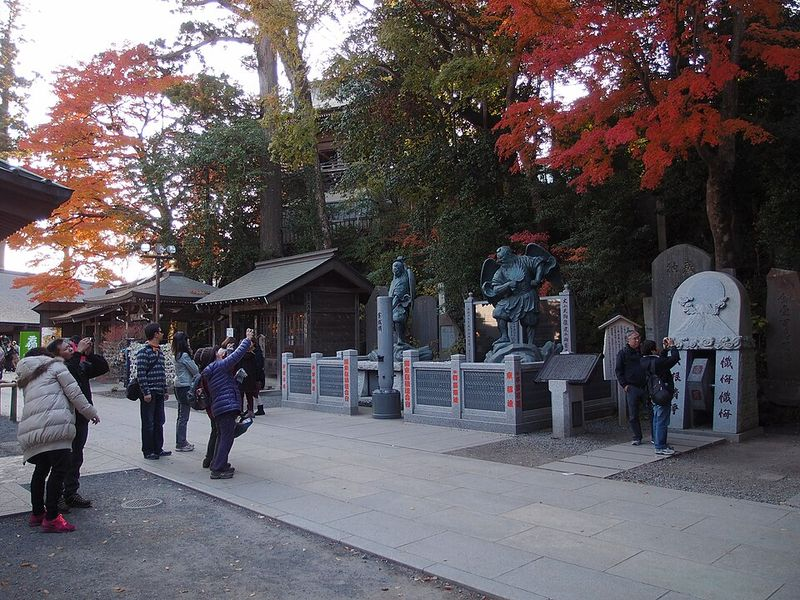
Mt. Takao Autumn Maples
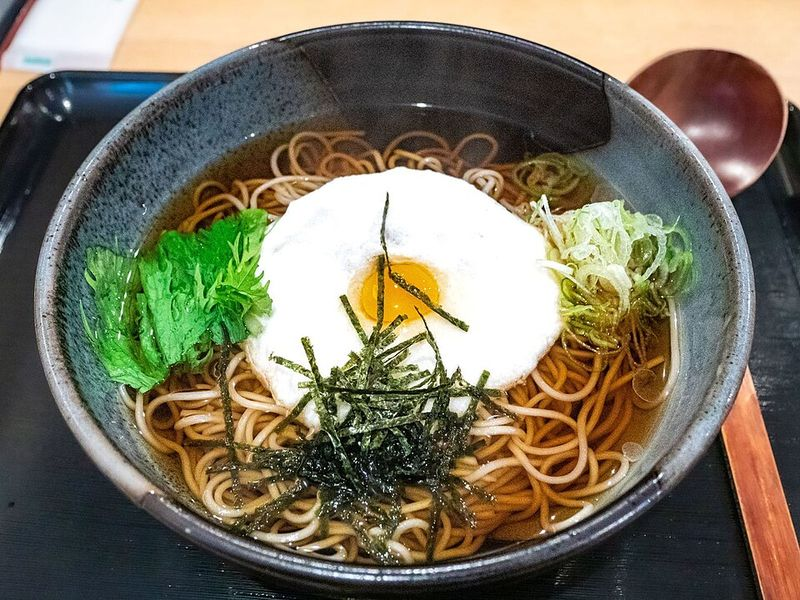
Summit Buckwheat Soba
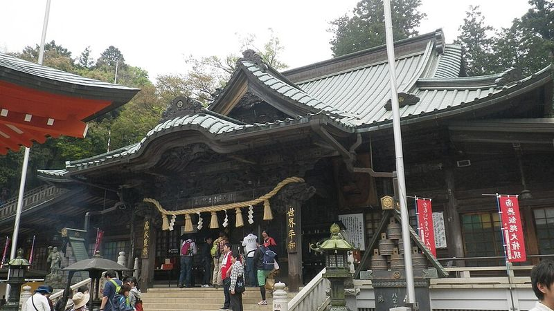
Yakuo-in Mountain Temple
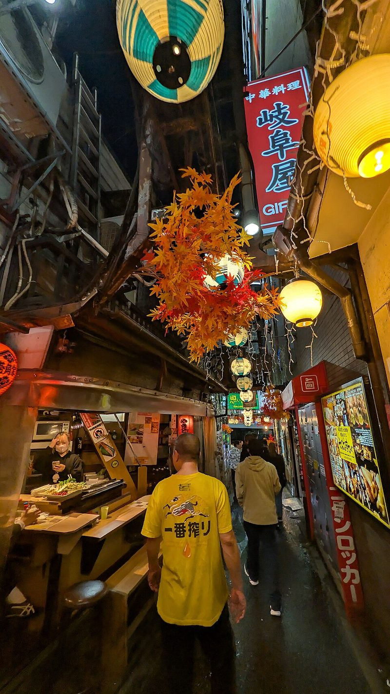
Omoide Yokocho Lantern Alley
Timed Schedule
-
05:30–07:15 🌅 Natural 05:30 Wake-Up + Unhurried Morning Routine & 07:15 Hotel Departure ☀️ DaytimeGrab free espresso in the 3rd-floor lobby or breakfast at the 1st-floor Tully's Coffee, spend 20 minutes outside in natural morning daylight without sunglasses, and walk out of JR Mets Shibuya by 07:15 AM to ride the Yamanote Line 7 minutes to Shinjuku and connect smoothly to the Keio Line gate. 🌟 Optional Add-On — Traveler Must-Do (07:05 AM, +0 Mins): 1F 7-Eleven 'Konbini' Iconic Snack Haul — stop into the 1st-floor 7-Eleven downstairs at JR Mets Shibuya to grab Japan's famous warm egg-salad sandwich (tamago sando), red-salmon or tuna-mayo onigiri, and hot bottled Royal Milk Tea for the train ride to Mt. Takao.📋 Required: Nothing (just tap your Suica card for the ¥170 train ride to Shinjuku).
-
07:45–08:35 Keio Line Express Train: Shinjuku → Takaosanguchi (50 min seated) ☀️ DaytimeBoard the direct Keio Line train from Keio Shinjuku Station straight to Takaosanguchi Station at the base of the mountain.📋 Required: Nothing to book in advance. This is a regular commuter train that departs every 20 minutes—just tap your Suica card (¥430) at the Keio Shinjuku gate.
-
08:45–10:45 Mt. Takao Cable Car Up + Trail 1 Summit Viewpoint (🌟 If Time Permits: Trail 4 Suspension Bridge) ☀️ DaytimeRide Japan's steepest funicular cable car halfway up the mountain and walk the scenic paved Trail 1 forest ridge at an unhurried pace to the 599-meter summit viewpoint overlooking Mt. Fuji. 🌟 If Time Permits: Add the forested Trail 4 suspension bridge loop on the way up or down (adds ~30 mins on the mountain and shifts your afternoon hotel nap from 2.5 hours to 2 hours).📋 Required: Nothing to book in advance. The Mt. Takao Cable Car does not take reservations—just tap your Suica card or buy a ¥950 round-trip ticket at the base station machine (departs every 15 minutes starting at 08:00). The national park and hiking trails are 100% free with no permit needed.
-
10:45–11:45 🍜 60-Min Summit Sit-Down Lunch: Hot Tororo Soba & Miso Dango ☕ Dedicated RestBeat the noon lunch crowd at a summit teahouse with hot buckwheat soba noodles in soy-bonito broth (naturally pork-free) and charcoal-grilled sweet miso rice dumplings.📋 Required: Nothing to book (summit teahouses are walk-in only; bring about ¥2,000 in cash per person since some mountain stalls are cash-only, and show your No-Pork Chef Card).
-
11:45–14:00 Yakuo-in Mountain Temple, Cable Car Down & Train Back to JR Mets Shibuya ☀️ DaytimeWalk through the historic cliffside grounds of Yakuo-in Temple on your way down from the summit, ride the Cable Car down to save your knees, and take the Keio Express + Yamanote Line back to your hotel room at JR Mets Shibuya by 14:00 (2h 15m realistic door-to-door descent & transit).📋 Required: Nothing (Yakuo-in Temple is 100% free and open-air; use the return half of your Cable Car ticket down and tap Suica for the ¥430 train ride back).
-
14:00–16:30 🛌 2.5-Hr Hotel Recharge & Power Nap (Beats the '2:30 PM Wall') ☕ Dedicated RestBecause 2:30 PM in Tokyo feels like 11:30 PM Chicago bedtime, enjoy a full 2.5-hour hotel recharge window (or 2 hours if you added the Trail 4 bridge detour)—plenty of time for both of you to shower/freshen up, take a 40-minute power nap (set an alarm!), and relax before heading out at 16:30.📋 Required: Nothing.
-
17:00–20:30 Omoide Yokocho Lantern Alley, 3D Giant Cat & Shinjuku Southern Terrace Lights 🏮 Sunset & NightRide 7 minutes to Shinjuku to walk through Omoide Yokocho as the red lanterns glow in the evening and have dinner along the illuminated Shinjuku Southern Terrace promenade. 🌟 Optional Add-On — Traveler Must-Dos (5-Min Walk from Omoide Yokocho): (a) Cross Shinjuku Vision 3D Giant Calico Cat Billboard outside Shinjuku East Exit, (b) Kabukicho Godzilla Head looking down from the Hotel Gracery terrace, and (c) Taito Station / GiGO Shinjuku Arcade—try a ¥100 claw machine, Gachapon capsule-toy wall, or Purikura photo booth.📋 Required: Nothing (all lantern alleys, billboards, and winter light promenades are free public streets, and dinner spots are walk-in).
Fri Nov 27
Mt. Fuji Panoramic Ropeway, Lake Kawaguchiko & Fuji-Q Coasters
📍 Mt. Fuji Corridor: Lake Kawaguchiko & Fuji-Q Highland
Leave JR Mets Shibuya at 07:25 AM for your booked 08:15 highway coach to Lake Kawaguchiko and the Mt. Fuji Panoramic Ropeway, take a 6-minute ($8) GO Taxi from the ropeway base straight to Fuji-Q Highland by 12:15 (giving you a stress-free 45-min entry cushion before your 13:00 Zokkon & 13:40 Fujiyama Priority Passes), enjoy a 70-minute sit-down lunch break at 14:00, ride 1 after-lunch highlight at 15:15 (or 2 if time permits), and nap on your booked 16:18 coach back to Shinjuku.
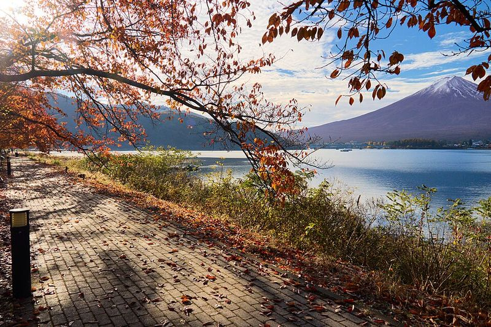
Mt. Fuji & Lake Kawaguchiko
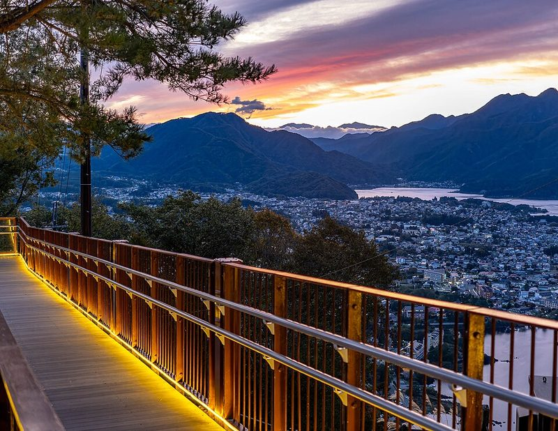
Mt. Fuji Panoramic Ropeway
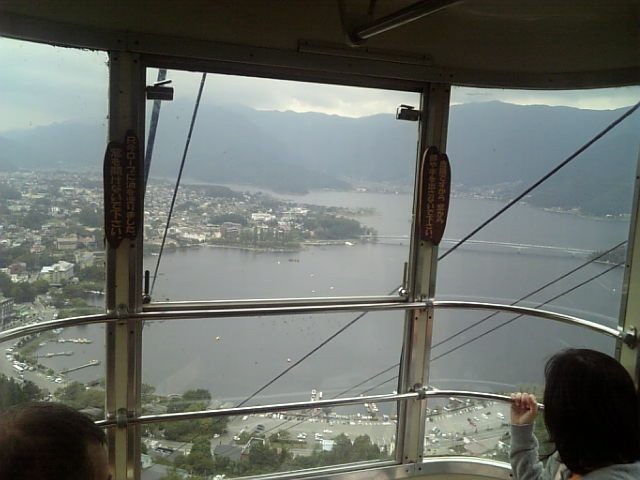
Lake View from the Gondola
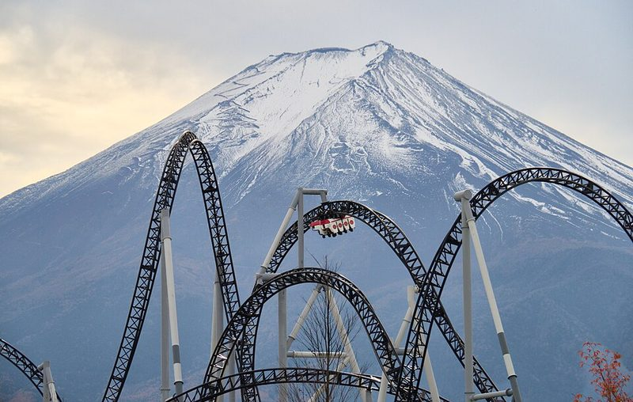
Fuji-Q Highland & Mt. Fuji
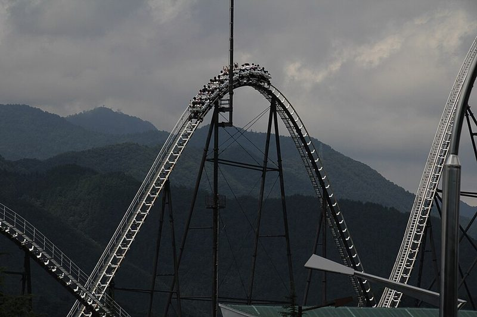
Fuji-Q Launch Coaster
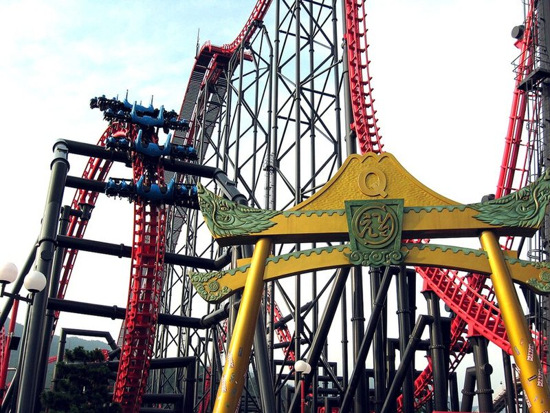
Fuji-Q Roller Coasters
Timed Schedule
-
06:15–08:00 🌅 Natural 06:15 Wake-Up + Breakfast & 07:25 Walk Out to Busta Shinjuku ☀️ DaytimeHave a relaxed 70-minute morning & breakfast at JR Mets Shibuya, then walk out of the hotel door at 07:25 AM sharp (10-min walk to Shibuya platform + 7-min Yamanote Line train to Shinjuku South Exit + 15 mins up the elevator to the 4th-floor Busta Shinjuku bus gate by 08:00 for your 08:15 bus).📋 Required: Nothing (tap your Suica card for the ¥170 train ride from Shibuya to Shinjuku).
-
08:15–10:00 ✅ Booked: Highway Coach 1151 (Busta Shinjuku 08:15 → Kawaguchiko 10:00) ☕ Dedicated RestYour reserved one-way highway bus seats are confirmed on highwaybus.com (Line 110, Bus 1151).📋 Required: ✅ Already Booked (highwaybus.com, Bus 1151). Just pull up your mobile Web Ticket on your phone when boarding at Busta Shinjuku (4th floor).
-
10:15–12:15 Lake Kawaguchiko Promenade, Mt. Fuji Panoramic Ropeway & 6-Min ($8) Taxi to Fuji-Q ☀️ DaytimeEnjoy a relaxed morning along Lake Kawaguchiko and ride the 3-minute gondola up to the Mt. Tenjo observation deck and summit teahouse (grab warm roasted dango or a Fujiyama Cookie with snow-capped Mt. Fuji right in front of you). Once back at the ropeway base around 12:05, hop in a 6-minute (~¥1,200 / $8) GO Taxi straight to the Fuji-Q Highland gate—arriving by 12:15 with zero station walk or train-schedule wait!📋 Required: Nothing to book in advance (the ropeway does not sell timed reservations). Buy your ¥1,200 per adult round-trip gondola ticket on-site at the base station machine or window, then hail a taxi at the ropeway base or tap GO Taxi (~¥1,200 / $8) directly to Fuji-Q Highland.
-
12:15–14:00 Fuji-Q Wave 1 — Unhurried Entry Cushion + 13:00 Zokkon Motorbike Launch & 13:40 Fujiyama ☀️ DaytimeArriving at 12:15 gives you a stress-free 45-minute buffer for face-pass registration, restrooms, and walking into the park before your first Priority window! Built around your love for Hagrid's Motorbike (smooth launches & sweeping speed, zero head-slamming loops): (1) 13:00 Zokkon—built by Intamin (the exact same maker as Hagrid's in Orlando!), featuring motorbike straddle seats, 4 separate LSM launches, a backwards switch-track launch tunnel, and ZERO inversions; (2) 13:40 Fujiyama ('King of Coasters')—an 81 mph, 259-ft hypercoaster with giant floating airtime hills facing Mt. Fuji, lap-bar only, and ZERO loops. (Skip Eejanaika—it has 14 violent flipping inversions that slam your head/shoulders).📋 Required: 🎟️ Book on Tue Nov 24 during your domestic flight / MSP layover or first 90 mins of DL275 w/ Wi-Fi Calling ON (or Wed Nov 25 @ 5:30 PM at JR Mets Shibuya): (1) Agoda Adult '1-Day Free Pass' (~$78 total for 2 w/ code ACTFORYOU26—covers unlimited rides all day), plus (2) 3 Priority Passes on fujiq.jp (~¥2,600 / $17 each = ~$102 total for 2; ~$180 all-in) for 13:00 Zokkon, 13:40 Fujiyama, and 15:15 Zokkon Round 2.
-
14:00–15:10 🍜 70-Min Sit-Down Hot Lunch, Snacks & Warm-Up Break (Food Stadium / Hoto Noodles) ☕ Dedicated RestTake a full, unhurried 70-minute sit-down break across the 2:30 PM body-clock window for simmering Hoto flat noodles in pumpkin miso broth, tempura/curry inside Food Stadium, roasted taiyaki, and hot drinks.📋 Required: Nothing to book in advance (walk-in dining; show your No-Pork Chef Card when ordering).
-
15:10–16:05 Fuji-Q Wave 2 — 15:15 Zokkon Re-Ride OR Fuji Airways 4D Flight (🌟 If Time Permits: Do Both!) ☀️ DaytimeTo keep the final hour relaxed before your 16:18 bus, plan on 1 main attraction after lunch: use your 15:15 Priority Pass for a 2nd ride on Zokkon (or ride indoor Fuji Airways 4D if winds pick up), then take an unhurried 20-minute stroll (15:40–16:05) for restrooms, warm snacks, and walking to the Highway Bus stop. 🌟 If Time Permits (e.g., if you finish lunch in 45–50 mins by 14:50 and want more action): ride Fuji Airways 4D first at 14:50 (included free on your 1-Day Pass) AND hit your 15:15 Zokkon Round 2 Priority Pass right after!📋 Required: Covered by your 1-Day Free Pass + 15:15 Priority Pass.
-
16:18–17:55 🚌 ✅ Booked: Highway Coach 1118 Nap Back to Shinjuku (16:18 → 17:55) ☕ Dedicated RestYour reserved return highway coach is confirmed on highwaybus.com (Line 110, Bus 1118) departing right outside the Fuji-Q Highland park gate.📋 Required: ✅ Already Booked (highwaybus.com, Bus 1118). Show your mobile Web Ticket on your phone at the Fuji-Q Highland Highway Bus Stop by 16:08.
-
18:45 'Hana-kin' (Flower Friday) Wagyu & Sushi Night in Shibuya or Shinjuku 🏮 Sunset & NightDrop off your heavy mountain jacket at JR Mets Shibuya and head out for sizzling wagyu beef teppanyaki, sushi, or crispy chicken karaage.📋 Required: Nothing (walk-in dinner; show your No-Pork Chef Card when ordering).
🎢 Fuji-Q Ride Cheat Sheet (Ranked for Hagrid's-Style Smooth Launches vs. Loops)
| Rank & Ride | Match | Loops & Restraint | Day-Of Plan | Why It Fits (or Doesn't Fit) Our Vibe |
|---|---|---|---|---|
| #1. Zokkon (2023) Motorbike Multi-Launch Coaster |
10/10 Ride 2x! |
0 Loops Motorbike Lap Seat (No Shoulder Harness) |
Priority #1 (13:00) & Priority #3 (15:15) |
Built by Intamin (the exact engineering firm behind Hagrid's Motorbike at Universal Orlando!). Features 4 separate linear-motor launches, a switch-track backwards launch inside an LED tunnel, sweeping banked turns facing Mt. Fuji, and butter-smooth track with zero ear-banging. |
| #2. Fujiyama 259-Ft / 81 mph Hypercoaster |
9/10 Must-Do |
0 Loops Lap-Bar Only (No Shoulder Harness) |
Priority #2 (13:40) (or Standby if ≤30m) |
Pure speed (81 mph), massive 230-ft drop, and giant floating airtime hills right in front of Mt. Fuji with zero inversions and nothing around your head/ears. (Pro Tip: Keep your back pressed firmly against the seat in the final low hills.) |
| #3. Fuji Airways 4D Suspended Flight Theater |
9/10 Indoor Thrill |
0 Loops Suspended Soarin'-Style Seat |
After-Lunch Swap / Bonus ($0 on 1-Day Pass) |
Swooping suspended flight simulator (like Soarin' / Flight of Passage) banking around Mt. Fuji across all 4 seasons with wind, mist, and forest scents—100% smooth and indoors (ride if wind pauses coasters, or at ~14:50 if you finish lunch early!). |
| #4. Tondemina / Sky Cycle Bonus Flat & View Rides |
7.5/10 Bonus Standby |
0 Loops Pendulum / Elevated Pedal Track |
Optional Standby ($0 on 1-Day Pass) |
Tondemina is a giant 137-ft swinging pendulum with huge zero-G airtime facing Mt. Fuji (no inversions); Sky Cycle / Shining Flower Ferris Wheel offer relaxed elevated Mt. Fuji views if you want a breather. |
| #5. Takabisha Launch + 121° Beyond-Vertical Drop |
6/10 Mixed |
7 Inversions Over-the-Shoulder Harness |
Optional Swap (Only if swapping 2nd Zokkon) |
First half is awesome: pitch-black drop into a 0–62 mph linear launch out of a tunnel. Second half has a catch: 90° vertical lift, 121° drop, and 7 inversions where the shoulder harness can rattle your ears left and right. |
| #6. Eejanaika 4D Rotating-Seat Coaster |
0/10 HARD SKIP |
14 Inversions Heavy Vest & Shoulder Restraint |
🚫 DO NOT RIDE | The exact opposite of what you enjoy: violently flips your seat forward/backward upside-down 14 times while whipping and slamming your head and shoulders. Skip 100%—especially on Day-3 jet lag. |
Sat Nov 28
Yanaka Ginza Old Town & Nezu Torii Tunnel, 12:00 Asakusa Sushi Class, Hotel Nap, Sunset SHIBUYA SKY & Ebisu
📍 Northeast Morning (Nezu & Yanaka Ginza → 12:00 Asakusa Sushi) → Direct Ginza Line to JR Mets Shibuya & Ebisu
Cluster Northeast Tokyo into one seamless morning: walk Nezu Shrine's vermilion torii tunnel and Yanaka Ginza's preserved pre-war wooden street, hop 10 minutes next door to Asakusa for your 12:00 PM Hands-On Sushi-Making Lunch Class, ride the direct Ginza Line back to JR-East Hotel Mets Shibuya for an unhurried afternoon recharge, and step onto the 47-story SHIBUYA SKY rooftop at your booked 16:40 entry for dusk twilight and the neon Tokyo skyline.
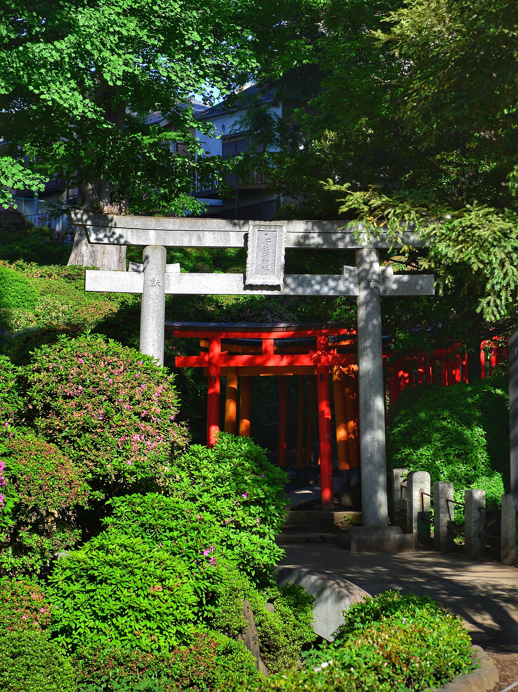
Nezu Shrine Torii Tunnel
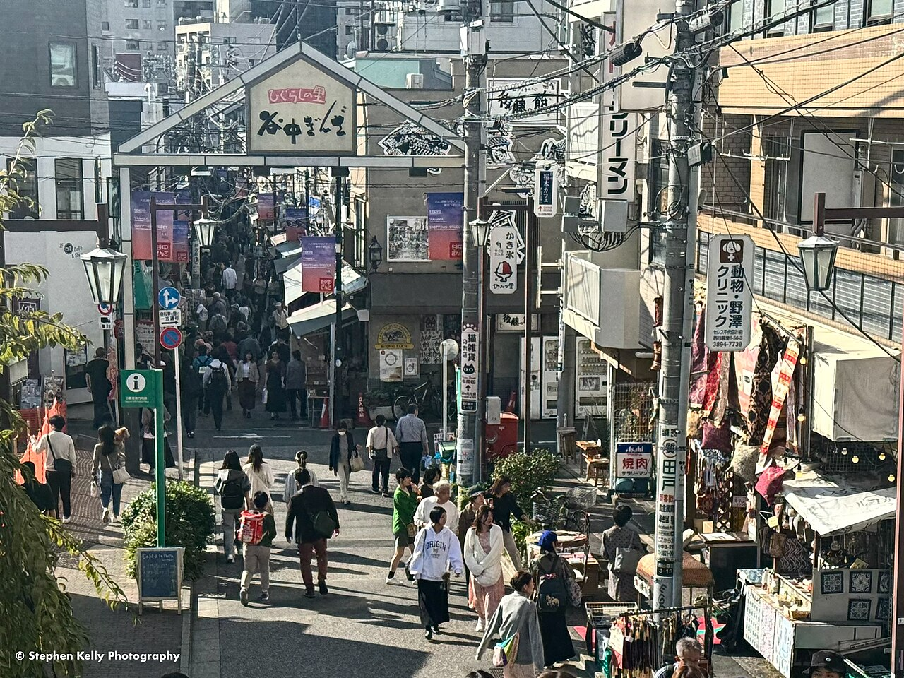
Yanaka Ginza Old Town
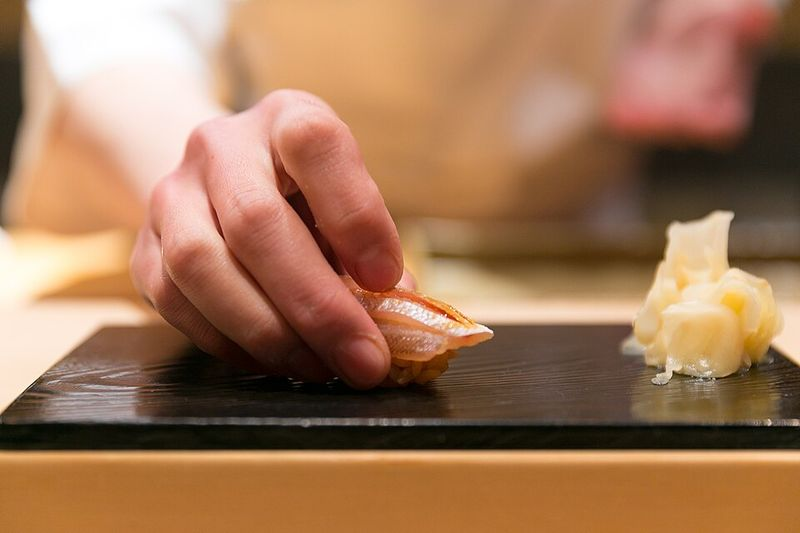
12:00 Sushi-Making Class
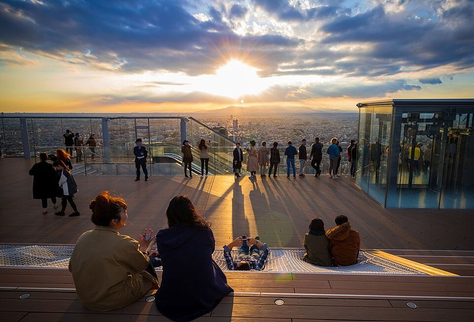
SHIBUYA SKY Rooftop
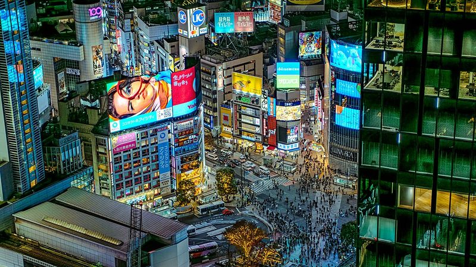
Shibuya Scramble Crossing
Timed Schedule
-
07:15–09:15 🌅 Natural 07:15 Wake-Up + Relaxed Breakfast & Direct Train to Nezu / Nippori ☀️ DaytimeEnjoy an unhurried morning at JR Mets Shibuya, then take the JR Yamanote Line direct to Nippori Station (28 mins, 0 transfers) or the Tokyo Metro Chiyoda Line from Meiji-Jingumae direct to Nezu Station (21 mins, 0 transfers).📋 Required: Nothing (tap your Suica card ¥210 for the direct train ride to Nezu or Nippori).
-
09:30–11:20 🏮 Preserved Old Tokyo ('Yanesen'): Nezu Vermilion Torii Tunnel & Yanaka Ginza Wooden Old Town Stroll ☀️ DaytimeStart with a 20-minute scenic walk through Nezu Shrine's Otome Inari Vermilion Torii Tunnel (a winding hillside path of red torii gates over koi ponds—giving you the iconic Kyoto Fushimi Inari torii photo with zero crowds). Then stroll 10 minutes past the preserved 1910 wooden Yoshida Sake Store and down the Yuyake Dandan steps into pedestrian-only Yanaka Ginza—one of the only Tokyo neighborhoods that survived both the 1923 earthquake and WWII bombings untouched. Browse pre-war wooden merchant storefronts, woodblock crafts, and grab a light morning chestnut or matcha sweet (save your lunch appetite for your 12:00 PM sushi class!). Wrap up Yanaka Ginza by 11:20 AM and hop in a 10-minute GO Taxi (~¥1,300 / $8.50) or 20-minute subway via Ueno so you arrive at your 12:00 PM Asakusa Sushi Class by 11:45–11:50 AM (10–15 minutes early).📋 Required: Nothing (100% free admission to Nezu's Otome Inari torii tunnel and Yanaka Ginza).
-
12:00–13:20 🍣 ✅ Booked & Confirmed: Hands-On Sushi-Making Class in Asakusa (12:00 PM) ☀️ DaytimeLearn to shape nigiri and sushi rolls alongside a friendly local chef and eat your creations as your Saturday sit-down lunch (100% pork-free and alcohol-free), then ride the direct Tokyo Metro Ginza Line end-to-end back to Shibuya (29 minutes seated, 0 transfers).📋 Required: ✅ Already Booked, Paid & Confirmed on Viator for Sat Nov 28 at 12:00 PM (Booking 217172P1). Show your mobile Viator voucher when you arrive at 11:50 AM.
-
14:00–16:15 🛌 2h 15m Hotel Recharge Break at JR-East Hotel Mets Shibuya ☕ Dedicated RestRest your feet and take a power nap in your hotel room across the 2:30 PM jet-lag window before walking 8.5 minutes across the Shibuya Stream skydeck to Shibuya Scramble Square (14F SHIBUYA SKY entrance).📋 Required: Nothing.
-
16:40–17:45 🌇 ✅ Booked: SHIBUYA SKY 47-Story Open-Air Rooftop (16:40–17:00 Entry · Dusk Twilight & Night Skyline) 🏮 Sunset & NightStep out onto the 360-degree open-air rooftop deck to catch the tail end of orange/pink dusk twilight (civil twilight lasts until ~16:58) and watch the entire 360° Tokyo neon skyline light up at night. 💡 Pro Tip: Arrive at the 14th-floor SHIBUYA SKY entrance by 16:30–16:35 so you are first in line to scan in at 16:40 sharp!📋 Required: ✅ BOOKED & PAID (Sat Nov 28, 16:40–17:00 Entry Slot, 2 Adults). Scan your QR tickets at the 14th-floor gate of Shibuya Scramble Square at 16:40 sharp, and bring a ¥100 coin for the mandatory refundable locker on the 46th floor.
-
17:50–20:00 Shibuya Scramble Crossing Neon Walk + Ebisu Tori-Paitan Chicken Ramen 🏮 Sunset & NightWalk across iconic Shibuya Scramble Crossing under the giant neon video screens, then take the Yamanote Line 1 stop (2 minutes) to Ebisu for rich, creamy chicken-broth ramen (tori-paitan) and crispy chicken gyoza.📋 Required: Nothing (Shibuya Scramble Crossing is a free public intersection, and Ebisu ramen shops are walk-in; tap Suica ¥150 for the 1-stop train).
Sun Nov 29
Meiji Jingu, Harajuku, 13:30 Kimono & Tea, Edo Denboin-dori, Asakusa Cafe Rest & 17:30 Sumo
📍 Harajuku & Omotesando (12:25 Subway) → Asakusa (13:30 Kimono & Tea + Denboin-dori + 45-Min Cafe Break) → Shinjuku (17:30 Sumo)
Sleep in until 08:30 AM at JR Mets Shibuya, hop 2 minutes to Meiji Jingu Forest Shrine, graze Takeshita Street crepes and Omotesando for lunch before boarding the direct Ginza Line by 12:25 PM to arrive 15 minutes early for your 1:30 PM Maikoya Silk Kimono & Tea Ceremony, stroll Edo wooden Denboin-dori & Senso-ji and change back into your street clothes without rushing (15:00–16:00), and enjoy a relaxed 45-minute sit-down cafe break in Asakusa (or visit Rikugien Garden if time permits) before your 5:30 PM Live Sumo Show & Chicken Hot-Pot Dinner in Shinjuku.
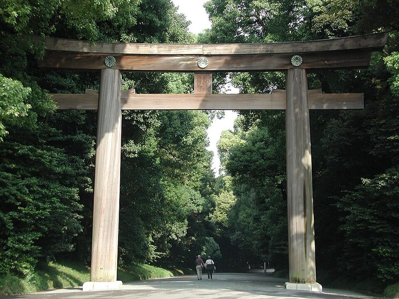
Meiji Jingu Forest Torii
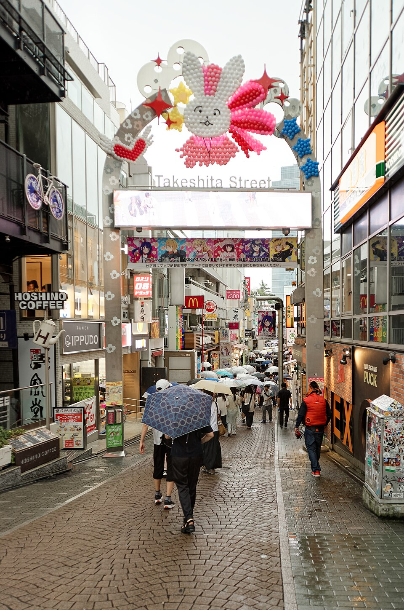
Takeshita Street & Omotesando
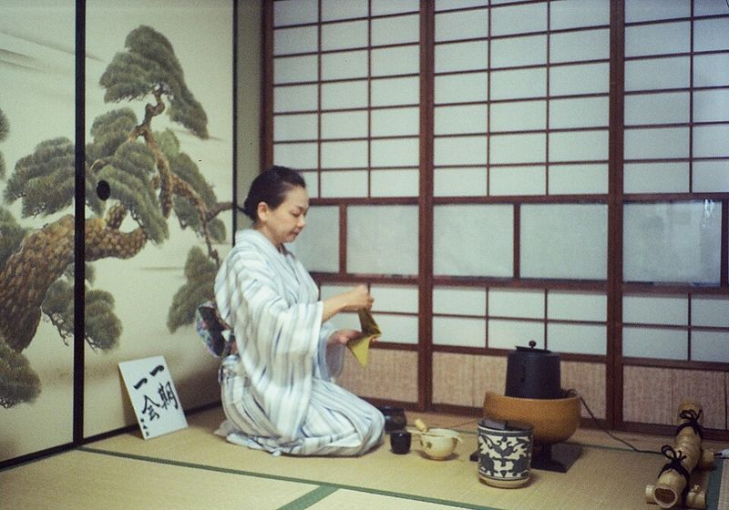
13:30 Kimono & Tea Ceremony
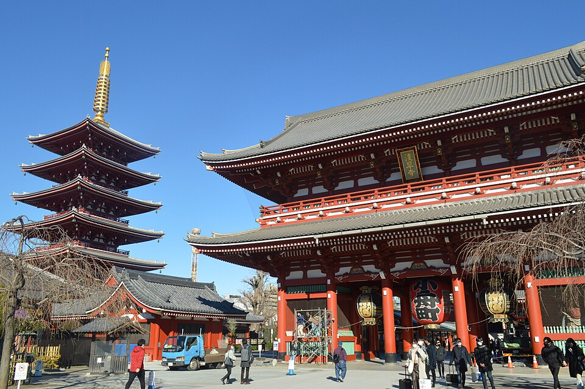
Senso-ji & Denboin-dori (Asakusa)
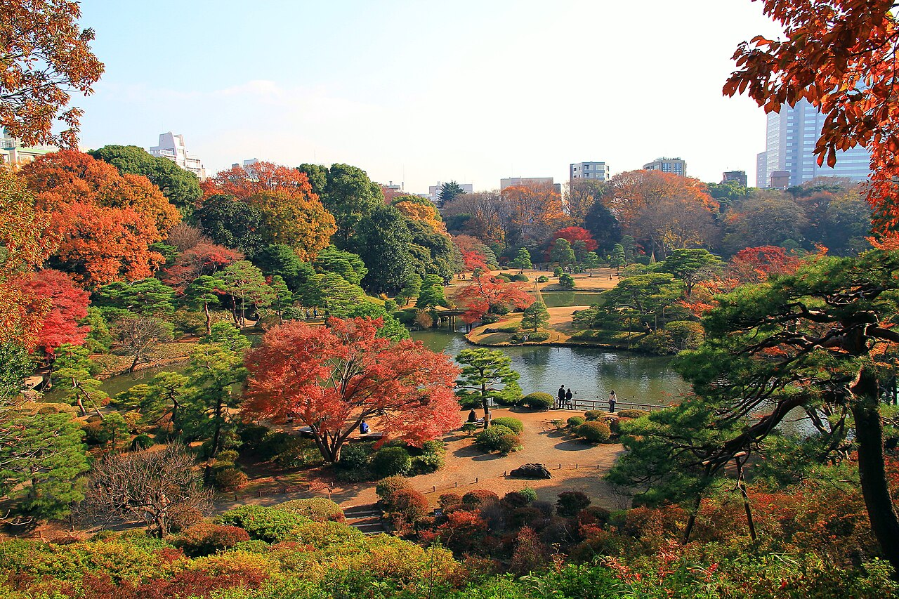
Optional: Rikugien Maples
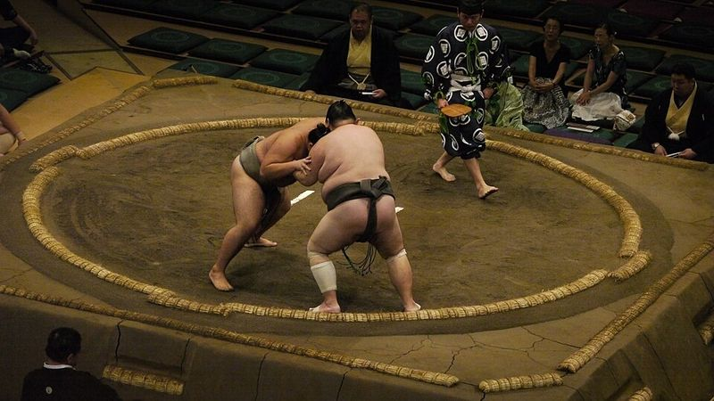
17:30 Live Sumo Show
Timed Schedule
-
08:30–09:50 🌅 Natural 08:30 Wake-Up + Relaxed Coffee at JR Mets & 2-Min Ride to Harajuku ☀️ DaytimeEnjoy a slow Sunday morning at JR Mets Shibuya, then take the JR Yamanote Line 1 stop (2 minutes) to Harajuku Station.📋 Required: Nothing to book (tap your Suica card ¥150 for the 1-stop train ride to Harajuku).
-
10:00–11:10 Meiji Jingu Forest Shrine (Shrine #1 of 2) ☀️ DaytimeWalk the peaceful gravel paths under giant cedar torii gates inside a 170-acre forest—Sunday morning is also the best time to spot traditional Shinto wedding processions in the courtyard.📋 Required: Nothing (100% free admission with no ticket or reservation required).
-
11:10–12:25 🍓 Takeshita Street Crepes & Omotesando / Cat Street Lunch Graze (Board Ginza Line by 12:25 PM) ☀️ DaytimeWalk down colorful Takeshita Street for warm strawberry-custard crepes, then stroll tree-lined Omotesando Boulevard and pedestrian Cat Street for a casual café brunch or street snacks. Walk down into Omotesando Station and board the direct Tokyo Metro Ginza Line by 12:25 PM sharp (27-min subway ride + ~20 mins total station entry/exit walking = arrives at Maikoya Asakusa at 13:15, a stress-free 15 minutes early for your 13:30 kimono fitting).📋 Required: Nothing (free pedestrian streets and walk-in crepe stands/cafes; tap your Suica card ¥250 for the direct Ginza Line subway to Asakusa by 12:25 PM).
-
13:30–15:00 👘🍵 ✅ Booked: Maikoya Asakusa Silk Kimono + Matcha Tea Ceremony (1:30 PM, $105) ☕ Dedicated RestFemale staff dress you in silk kimonos inside a women-only dressing area over your base layers (hijab stays completely undisturbed, 13:30–14:00), followed by a 60-minute seated English Matcha Tea Ceremony with traditional wagashi sweets in a tatami room (14:00–15:00) right across the afternoon recharge window.📋 Required: ✅ Already Booked on Viator (Booking 51440P108 for 1:30 PM, $105). Show your mobile Viator voucher at Maikoya Asakusa (1-12-2 Asakusa). Prep tip: wear a thin fitted long-sleeve top and leggings so they can wrap the kimono cleanly over your clothes.
-
15:00–16:00 🏮 Outdoor Silk Kimono Stroll: Denboin-dori, Nakamise & Senso-ji (Temple #2 of 2) + Unhurried Kimono Return ☀️ DaytimeKeep your silk kimonos on after tea and step right onto Denboin-dori (preserved Edo-style wooden merchant storefronts with overhanging clay-tiled roofs and painted signboards), Nakamise-dori, and 645 AD Senso-ji Temple (15:00–15:40), then head back inside Maikoya with a full 20-minute buffer (15:40–16:00) to unwrap both silk kimonos/obis, change back into your shoes and street clothes, and use the restroom without rushing.📋 Required: Nothing (Denboin-dori, Nakamise Street, and Senso-ji Temple are 100% free and open 24/7; return your kimonos to Maikoya around 15:40).
-
16:00–16:45 ☕ 45-Min Asakusa Sit-Down Cafe Break & Direct Ride to Shinjuku (🌟 If Time Permits: Rikugien Garden Maples) ☕ Dedicated RestEnjoy an unhurried 45-minute sit-down coffee, roasted Hojicha latte, or matcha parfait break in Asakusa to rest your feet after walking in wooden sandals, then board the Ginza Line → Kanda → JR Chuo Rapid at 16:45 to arrive at your Shinjuku Sumo venue by 17:15 (remember you still get a full 70-minute autumn maple garden stroll at Shinjuku Gyoen on Wednesday!). 🌟 If Time Permits (e.g., if you finish changing out of kimonos early by 15:35 and don't need the 45-min cafe rest): ride the Ginza Line → Ueno → JR Yamanote to Komagome for a 40-minute dusk stroll through Rikugien Garden's crimson autumn maples (16:05–16:50, ¥300 admission) before hopping the 15-minute Yamanote train to Shinjuku.📋 Required: Nothing for the Asakusa cafe break (walk-in; tap Suica for the train to Shinjuku at 16:45, or ¥300 walk-up admission if you choose the optional Rikugien detour).
-
17:30–19:15 ✅ Booked: Seated Live Sumo Show & Chicken Hot-Pot Dinner (5:30 PM, Shinjuku) 🏮 Sunset & NightWatch live sumo demonstrations and matches between former professional wrestlers, learn the rules in English, take a photo in the ring, and eat a warm chicken chanko-nabe hot-pot dinner.📋 Required: ✅ Already Booked on Viator (Booking 5610033P1 for 5:30 PM). Show your mobile Viator voucher at the Shinjuku venue door at 17:15.
-
19:30 Onward Return to JR-East Hotel Mets Shibuya & Pack 1-Night Backpack for Hakone 🏮 Sunset & NightTake the 7-minute Yamanote Line train back to JR Mets Shibuya, grab dessert along Shibuya Stream if you like, and pack 1 change of clothes + phone chargers into a single small backpack for Monday's trip to Hakone.📋 Required: Mizunoto Ryokan provides pajamas (yukata), towels, toothbrushes, skincare, shampoo, and hairdryers—so leave everything else inside your two large suitcases!
Mon Nov 30
Hakone Mountain Train, Volcanic Gondola, Lake Ashi Ship, Cedar Trail & Mizunoto Ryokan
📍 JR Mets Shibuya Check-Out (08:30) → Hakone Golden Loop → Kowakidani Onsen (Mizunoto)
Wake naturally at 07:30 AM for a calm 60-minute morning routine at JR-East Hotel Mets Shibuya, hop in a 4-minute ($6) taxi at 08:30 AM to drop your two large suitcases at lyf Shibuya while carrying only a light 1-night backpack (giving you a stress-free 90-minute cushion for bag tags, the train to Shinjuku, and finding the Odakyu Romancecar gate), ride the booked 10:00 AM Romancecar to Hakone-Yumoto, and complete the classic Hakone Golden Loop to check into Mizunoto by 16:00.
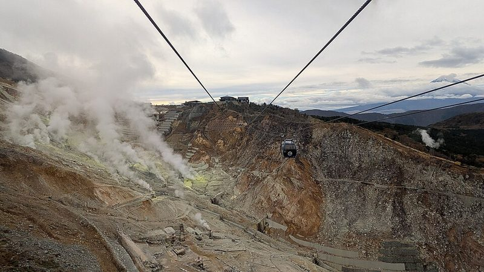
Hakone Ropeway Gondola
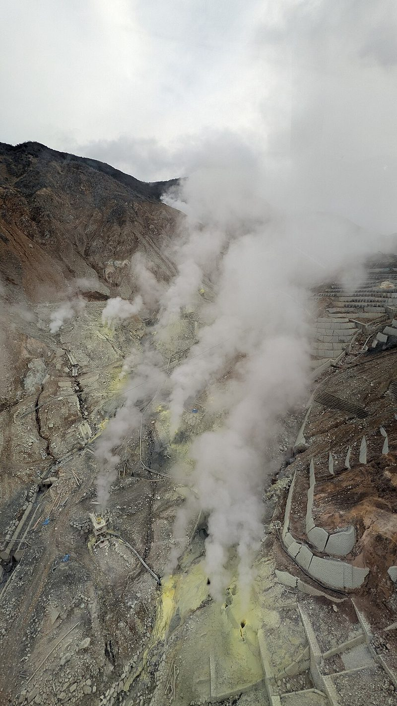
Owakudani Volcanic Valley
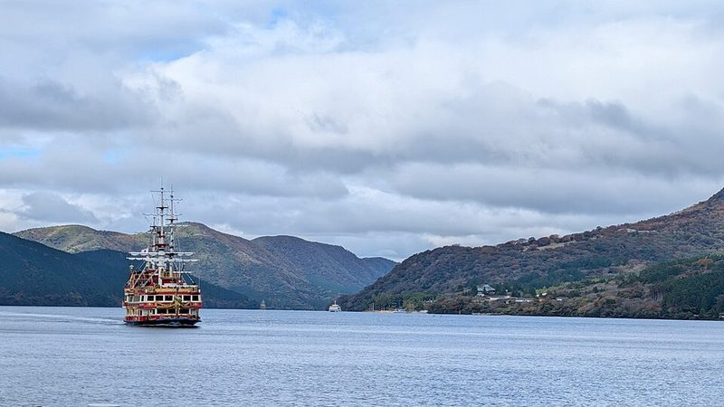
Lake Ashi Sightseeing Ship
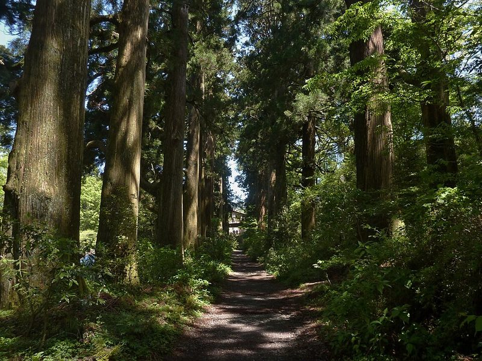
Old Tokaido Cedar Trail
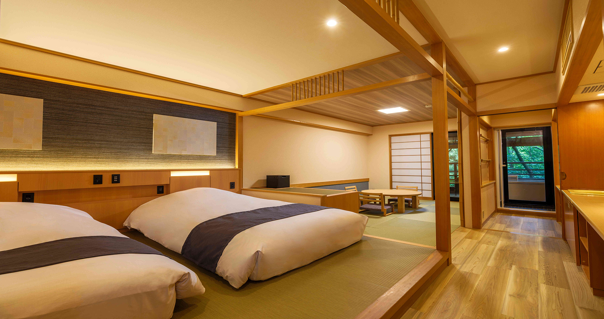
Mizunoto Suikanosho Room
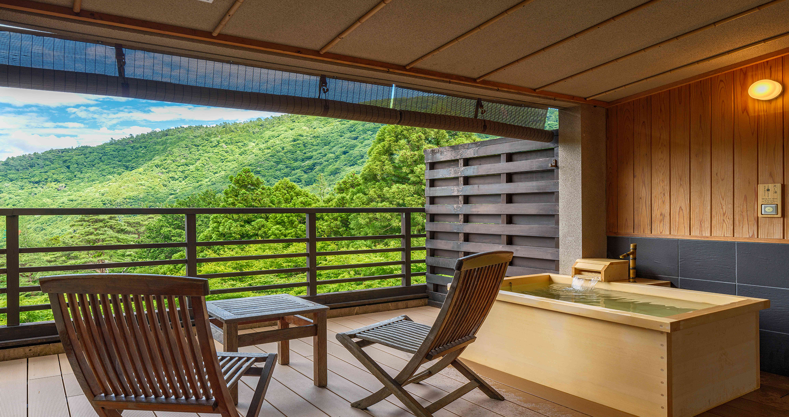
Mizunoto Hinoki Balcony Bath
Timed Schedule
-
07:30–08:30 🌅 Natural 07:30 Wake-Up, Express Check-Out of JR Mets Shibuya & 08:30 4-Min ($6) GO Taxi Suitcase Drop at lyf Shibuya ☀️ DaytimeEnjoy a calm 60-minute morning routine from 07:30–08:30. 🎒 Pack Ultra-Light for 1 Night: Mizunoto Ryokan provides pajamas (yukata), towels, toothbrushes, razors, skincare, shampoo, and hairdryers—so pack ONLY 1 change of clothes + phone chargers in a single small backpack and leave everything else inside your two large suitcases! At 08:30 AM, hop in a 4-minute (~¥900 / $6) GO Taxi from JR Mets Shibuya straight to the 24-hour front desk of lyf Shibuya Tokyo (4-3 Udagawacho) to tag and drop both large suitcases, then walk 8 minutes to Shibuya Station and ride 7 minutes to Shinjuku—arriving at the Odakyu West Ground Gate by ~09:30 with plenty of time to activate your EMot Freepass before your 10:00 AM Romancecar.📋 Required: No advance booking required. Just show your Dec 1 lyf Shibuya Priceline confirmation at lyf's 24-hour desk to store your suitcases for free, and tap Suica (¥170) for the train to Shinjuku.
-
10:00–11:27 Leg 0 — Odakyu Romancecar 'Hakone 3 (GSE)' Panoramic Express (Shinjuku → Hakone-Yumoto · Car 03, Seats 9C & 9D) ☀️ DaytimeRelax in your reserved right-side panoramic window seats (Carriage 03, Seats 9C & 9D — Mt. Fuji view side, unobstructed odd-row glass) on Odakyu's flagship red GSE express train from Shinjuku straight to Hakone-Yumoto Station (zero train transfers).📋 Required: ✅ BOOKED (Booking #00058 + EMot 2-Day Group Freepass). What you need to board: (1) Open EMot on your iPhone, tap 'Activate' on your 2-Day Hakone Freepass (Group), and scan the live QR code at the Odakyu Shinjuku ticket gate (needs cell data; screenshots not accepted); (2) Walk straight onto Car 03, Seats 9C & 9D (no ticket counter exchange needed)—keep your e-Romancecar confirmation email/screenshot (Booking #00058) AND the physical credit card ending in 9554 with you on board.
-
11:35–12:25 Leg 1 — Hakone Tozan Mountain Switchback Train & Cable Car (Hakone-Yumoto → Gora → Sounzan) ☀️ DaytimeWalk straight across the platform at Hakone-Yumoto Station to board the scenic mountain train as it zig-zags up three switchbacks through the forest to Gora (40 mins, departs every 15–20 mins), then hop onto the funicular Cable Car up to Sounzan (10 mins).📋 Required: 100% covered by your 2-Day Hakone Freepass (just show/scan your Freepass QR code at the gate—no separate reservation needed).
-
12:30–13:20 Leg 2 — Hakone Ropeway Over Owakudani Volcanic Valley (+ 25-Min Summit Break) ☀️ DaytimeBoard the aerial gondola (cabins arrive continuously every 60 seconds) and soar 130 meters above steaming sulfur vents with views of Mt. Fuji. Step off at Owakudani summit station for 25 minutes to see the volcanic crater and try the famous black hot-spring eggs, then continue down to Togendai Port.📋 Required: 100% covered by your 2-Day Hakone Freepass (if high winds ever pause the gondola, your Freepass also covers the backup Tozan bus at no extra cost; bring ¥500 cash if you want a bag of 5 black volcanic eggs).
-
13:30–14:05 Leg 3 — Lake Ashi Sightseeing Pirate Ship Cruise (Togendai → Moto-Hakone, 35 min) ☀️ DaytimeWalk straight from the Togendai ropeway terminal onto the Lake Ashi Sightseeing Ship (departs every 30–40 mins) for a 35-minute cruise across volcanic Lake Ashi past the red lakeside torii gate of Hakone Shrine.📋 Required: 100% covered by your 2-Day Hakone Freepass (scan your Freepass QR code at the pier).
-
14:10–15:35 ☕ Moto-Hakone Lunch & Old Tokaido 400-Year Cedar Trail ☕ Dedicated RestSit down along the Lake Ashi waterfront at Bakery & Table Hakone or a lakeside soba noodle cafe, then walk a peaceful, flat/gentle preserved stretch of the ancient stone highway under towering 400-year-old cedars. 🌟 Optional Add-On — Cold/Cloudy Backup (1 Min Across from Pier): Narukawa Art Museum Panorama Lounge — floor-to-ceiling indoor glass lounge overlooking Lake Ashi's floating red torii gate and Mt. Fuji (¥1,300 with Freepass discount).📋 Required: Nothing for the walk-in lakeside cafes or free public cedar trail (show your No-Pork Chef Card); the optional Narukawa Art Museum is walk-up admission.
-
15:40–16:00 Leg 4 & Check-In — H-Line Bus (18 min) to ✅ Booked Mizunoto Ryokan (Private Hinoki Balcony Bath) 🏮 Sunset & NightRide the Hakone Tozan H-Line Bus 18 minutes from Moto-Hakone Port to Kowakidani Station (departs every 15–20 mins, 100% covered by your Freepass). Mizunoto's free shuttle from Kowakidani Station runs 14:00–17:00 every 10–15 mins—perfect for your 16:00 arrival; after 17:00 it's a 3-minute taxi or 15-minute walk. Soak anytime in your 35 m² Suikanosho room's golden Hinoki cypress tub on the balcony, try the 3 free outdoor maple-garden private hot-spring huts, and enjoy complimentary post-bath ice pops and 22:30 Yonaki Soba ramen. 🌟 Optional Add-On / Weather Backup (1 Stop from Kowakidani): Hakone Open-Air Museum (4.0★ JG, Chokoku-no-Mori Station — 2 mins from Kowakidani on the Tozan train, open 09:00–17:00, ¥1,900 with Freepass discount) — Hakone's #1 traveler-rated outdoor sculpture park & Picasso Pavilion set against the mountain valley; ideal if wind/rain ever pauses the Ropeway/Pirate Ship or if you want a 45-minute stop before checking in.📋 Required: ✅ Already Booked on Priceline ($380 with tax). The H-Line bus is covered by your Hakone Freepass. Present both physical passports at check-in (there is a standard ¥150 per person local hot-spring tax paid at the desk, and the 3 outdoor private bath huts require no reservation—just flip the wooden sign on the door).
Tue Dec 1
11:14 Kodama 808 Bullet Train, Ramen Street + 12-Min Taxi to Samurai Museum, Kappabashi & Shibuya Free Time
📍 Mizunoto (09:00 Check-Out) → 11:14 Odawara Bullet Train → Tokyo Station Ramen Street → 12-Min Taxi to Asakusa Samurai & Kappabashi → lyf Shibuya Free Time
Enjoy a morning Hinoki balcony hot-spring soak at Mizunoto and check out at 09:00 AM for a 3-minute taxi to Kowakidani and the scenic mountain train + Hakone-Yumoto transfer down to Odawara Station by ~10:30 AM. Board your booked 11:14 AM Kodama 808 Shinkansen Bullet Train (Res #2000 · Car 12, Seats 12-D & 12-E · ¥6,820 paid) for the 34-minute nonstop run to Tokyo Station (11:48 AM), eat pork-free ramen at Tokyo Ramen Street (Soranoiro NIPPON), hop in a 12-minute ($14) taxi from the Yaesu Taxi Stand at 12:55 PM straight to your booked 1:30 PM Samurai & Ninja Museum tour (51440P80) in Asakusa, walk 6 minutes to Kappabashi Knife Street, then enjoy flexible afternoon free time around 4-star lyf Shibuya before your Unagi finale dinner.
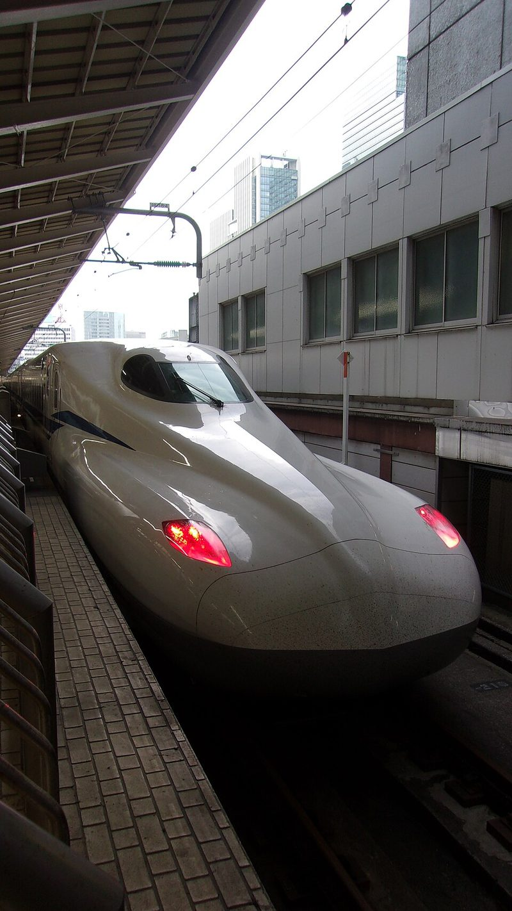
11:14 Kodama 808 Shinkansen
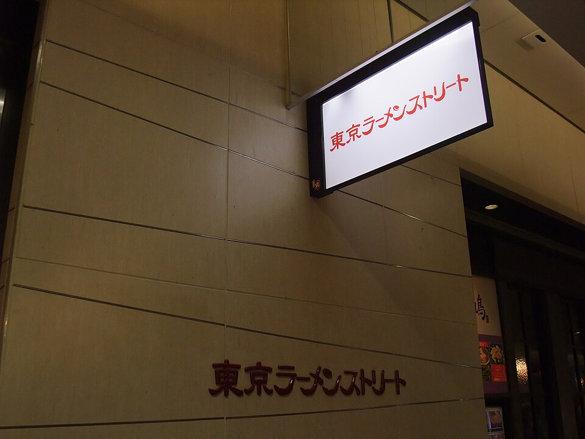
Tokyo Station Ramen Street
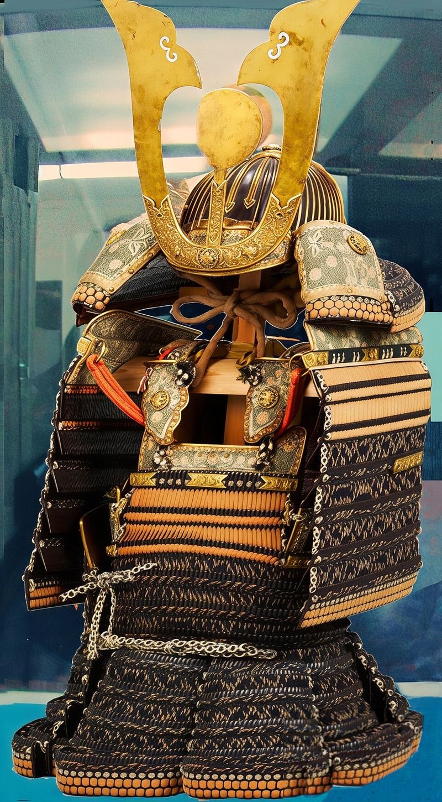
13:30 Samurai & Ninja Museum
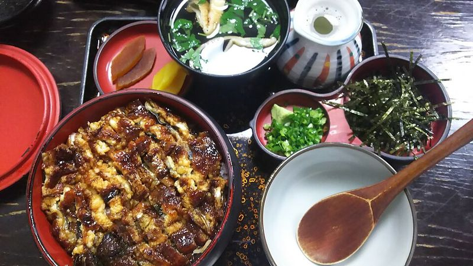
Charcoal-Grilled Unagi (Eel)
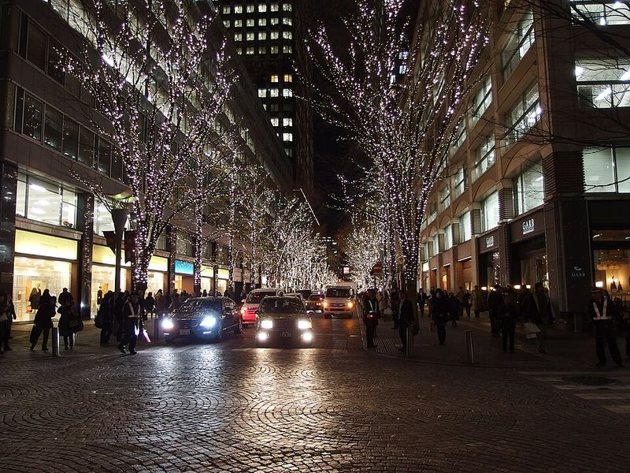
Winter Holiday Illuminations
Timed Schedule
-
07:45–10:30 🌅 Morning Balcony Onsen Soak at Mizunoto & 09:00 Check-Out Down the Mountain to Odawara Station ☀️ DaytimeEnjoy one last morning soak in your private Hinoki balcony hot-spring tub (plus free probiotic drinks in the lounge). Why check out at 09:00 AM? Because Mizunoto's free station shuttle only operates 14:00–17:00, at 09:00 AM you'll take a 3-minute taxi (or 15-minute downhill walk, 0.7 km) to Kowakidani Station, then ride the scenic Hakone Tozan mountain switchback train to Hakone-Yumoto (~40 mins) and transfer across the platform to Odawara Station (~15 mins; ~65–70 mins total with the transfer wait). Checking out at 09:00 AM gets you to Odawara Station by ~10:30 AM—giving you a real 44-minute buffer to grab coffee/snacks before your 11:14 AM Kodama 808 bullet train.📋 Required: Nothing to book—check out by 09:00 AM, take a 3-minute taxi or 15-minute downhill walk to Kowakidani Station, and use Day 2 of your Hakone Freepass for the mountain train down to Odawara Station.
-
11:14–11:48 🚄 ✅ Booked: Tokaido Shinkansen 'Kodama 808' Bullet Train (Dep 11:14 AM Odawara → Arr 11:48 AM Tokyo · Car 12, Seats 12-D & 12-E · Res #2000) ☀️ DaytimeBoard Japan's flagship Series N700 Shinkansen bullet train at Odawara Station (Shinkansen Track 14) at 11:14 AM sharp for a smooth 34-minute nonstop run arriving at Tokyo Station at 11:48 AM. Your reserved seats are Car 12, Row 12, Seats 12-D & 12-E—the 2-seat pair on the left/north side of the train facing Mt. Fuji in the smooth center of the car. 💡 Optional $0 Earlier-Train Bonus: If you arrive at Odawara by 10:25 AM and want extra time at Tokyo Station, you can tap 'Change' in smart-ex.jp on your phone to move your seats to the ~10:40 AM Shinkansen for ¥0 free!📋 Required: ✅ BOOKED, PAID & SEATS LOCKED on Smart EX: Train = Kodama 808 (Ordinary Car Reserved) · Date = Tue Dec 1, 2026 · Departure = 11:14 AM Odawara → Arrival = 11:48 AM Tokyo Station · Seats = Car 12, Row 12, Seats 12-D & 12-E · Booking Ref = Smart EX Reservation #2000 · Fare = ¥6,820 Total (2 Adults, paid on Visa ending in 9554). How to Board: Open smart-ex.jp on your phone and scan your Smart EX QR-Ticket (or tap your linked Apple Wallet Suica) directly at the Odawara Shinkansen gate.
-
11:55–13:10 🍜 Tokyo Station Ramen Street Lunch (Soranoiro NIPPON) + 12:55 12-Min ($14) Yaesu Taxi to Samurai Museum ☀️ DaytimeWalk 7 minutes from Shinkansen Car 12 to Tokyo Ramen Street (Yaesu Underground Central Exit) and head straight to Michelin Bib Gourmand Soranoiro NIPPON—the standout pork-free shop on Ramen Street famous for its rich vegan/veggie and clam/mushroom ramen (because you are skipping Rokurinsha's 60-minute pork-broth line, Soranoiro's wait is only ~10–15 minutes; under-seat baskets hold your light 1-night backpack, or T's Tantan inside Gransta is another 100% pork-free favorite). 🚕 12:55 PM Time-Saver Hack: Ramen Street sits directly underneath Tokyo Station's Yaesu Taxi Stand! Instead of spending 45 minutes walking across Tokyo Station for 2 subways and hunting for a coin locker, walk right upstairs to the Yaesu Taxi Stand at 12:55 PM and take a 12-minute (~¥2,100 / $14) GO Taxi straight to the Samurai & Ninja Museum door by 13:10.📋 Required: Nothing to book (order on the English touchscreen machine at Soranoiro NIPPON using Suica or cash and show your No-Pork Chef Card, then hop in a taxi upstairs at the Yaesu Exit taxi stand at 12:55 PM).
-
13:30–14:30 ✅ Booked: Samurai & Ninja Museum Guided Tour in Asakusa (1:30 PM, $45) ☀️ DaytimeJoin your 60-minute interactive English tour with samurai armor and helmet try-on, replica katana sword photos, and real metal ninja star (shuriken) target practice. 🎒 Zero-Backtrack Bag Tip: Leave your small 1-night Hakone backpack behind the Samurai Museum reception desk during your tour (or pop it into a ¥400 Suica locker at Tawaramachi Station right after) so you walk Kappabashi hands-free and ride the direct Ginza Line straight from Tawaramachi to lyf Shibuya at 15:35!📋 Required: ✅ Already Booked on Viator (Booking 51440P80 for 1:30 PM, $45). Show your mobile Viator voucher at the museum front desk when your taxi drops you off around 13:10–13:15.
-
14:35–15:35 🔪 Kappabashi Knife & Kitchen Town (6-Min Walk from Samurai Museum) ☀️ DaytimeWalk 6 minutes west to Tokyo's century-old culinary street (most shops close around 17:00)—completely hands-free if you left your small 1-night backpack in the Tawaramachi/Asakusa Station ¥400 Suica locker! Watch Japanese master smiths at Kama-Asa or Tsubaya hand-engrave your name in Kanji onto a Japanese chef's knife ($50–$95 tax-free—ready in 10 minutes to pack into your checked suitcases at lyf Shibuya tonight!), browse famous ultra-realistic Japanese plastic food-sample (Sampuru) shops, and pick up $3–$12 ceramic ramen and matcha bowls at Dengama. 🌟 Optional Add-On — En-Route Stop-Offs begin after Kappabashi: Akihabara or dusk-lit Senso-ji are detailed in the next stop.📋 Required: ✅ Locked In ($0 entry, no advance tickets needed; bring your physical passport for 10% tax-free shopping at the register).
-
15:35–18:15 🌟 Optional Add-On — Flexible Afternoon Choices: En-Route Stop-Offs or lyf Shibuya Walk-Ins ☕ Dedicated Rest🌟 Optional Add-On — En-Route Stop-Offs (15:40–16:35 on Your Way Back to Shibuya): Option A — Akihabara Electric Town & Retro Game / Gachapon Arcades (0 Extra Transfers): hop off the Ginza Line at Suehirocho Station, just 2 stops / 4 minutes from Kappabashi's Tawaramachi Station on the exact same train line back to Shibuya, for a 45-minute walk through Chuo-dori's neon anime/retro-game shops (Super Potato, GiGO arcades, Gachapon Hall), then re-board the Ginza Line straight to lyf Shibuya. Option B — Senso-ji Temple Illuminated at Dusk (16:30 Sunset / 17:00 Lights-On): travelers rave about seeing Senso-ji's giant red lanterns lit up at dusk with a fraction of the daytime crowd. 🌟 Optional Add-On — Right Outside lyf Shibuya (Zero-Commute Walk-In Options, 16:15–18:15): (1) Cat Street (Ura-Harajuku) & Jinnan Indie Cafes (6-min walk), (2) Miyashita Park Rooftop Lawn & Cafe (5-min walk), (3) Shibuya PARCO 6F (Nintendo TOKYO & Pokémon Center, 1 min across the street), (4) Mega Don Quijote Shibuya (4-min walk), or (5) Conveyor-Belt Sushi (Kaitenzushi—e.g., Sushiro Shibuya or Kura Sushi) for a fun 20-minute touchscreen plate snack!📋 Required: ✅ Hotel Already Booked on Priceline ($194 with tax). These are optional choices, not a checklist: pick one unrushed en-route stop-off OR head directly to lyf for check-in, rest, and a zero-commute walk-in option.
-
18:30–20:30 Shibuya Charcoal-Grilled Unagi (Eel) Finale Dinner & Omotesando / Miyashita Park Holiday Illuminations 🏮 Sunset & NightStay right in your Shibuya / Omotesando neighborhood with zero cross-town subway backtracking! Celebrate your final night in Tokyo with charcoal-grilled unagi (freshwater eel) over steamed rice right in Shibuya (such as Hitsumabushi Nagoya Bincho at Shibuya Stream / Hikarie or Matsukawa at Shibuya Scramble), followed by an unhurried evening stroll beneath the winter lights along Miyashita Park and tree-lined Omotesando Boulevard.📋 Required: Nothing (illuminations are 100% free public walkways right in your neighborhood, and Shibuya unagi restaurants are walk-in; show your No-Pork / No-Alcohol Chef Card when ordering).
Wed Dec 2
Sleep In, Isetan Depachika Food Hall, Shinjuku Gyoen Maple Picnic & 2:00 PM Private Transfer to Haneda
📍 lyf Shibuya (10:15 Check-Out & Free Bag Hold) → Isetan Depachika → Shinjuku Gyoen Picnic → 13:20 Back at lyf for 2:00 PM Private Transfer
Sleep in until 09:00 AM on your final morning, check out of lyf Shibuya at 10:15 AM and leave your heavy suitcases at the 24-hour front desk for free, walk and ride hands-free to Shinjuku to pick up gourmet bento, tempura, fruit daifuku, and edible gifts at Isetan's famous basement food hall (10:50–11:25), walk 5 minutes into Shinjuku Gyoen National Garden for a relaxed 70-minute park-bench picnic under the crimson late-autumn maples (11:30–12:40), and head back at 12:40 PM so you walk into lyf Shibuya by 13:20—giving you a real 40-minute hotel buffer for bathrooms and repacking souvenir boxes before your 2:00 PM Agoda Private Transfer ($55) to Haneda Terminal 3.
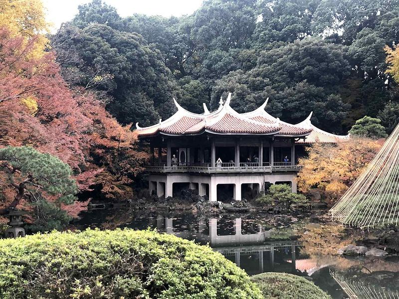
Shinjuku Gyoen Pavilion
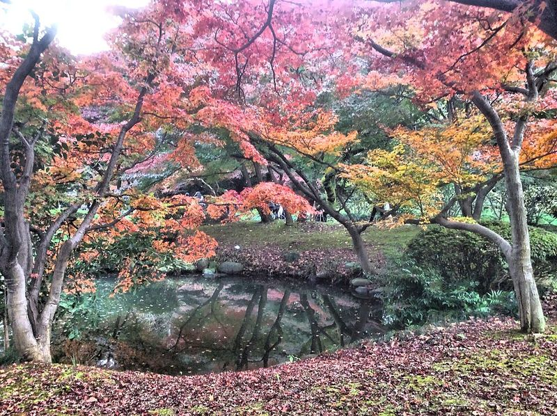
Shinjuku Gyoen Autumn Maples
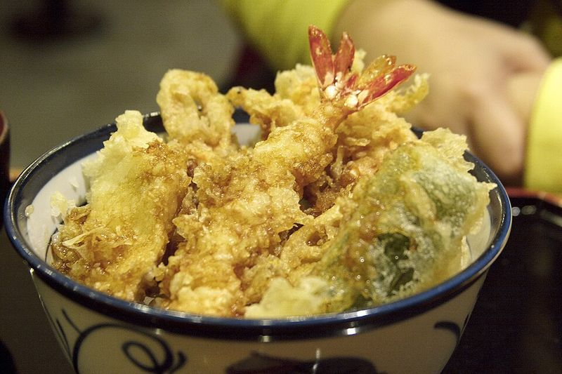
Tempura & Depachika Food Hall
Timed Schedule
-
09:00–10:15 🌅 Sleep In Until 09:00 AM, 10:15 Check-Out at lyf Shibuya & Free Front-Desk Bag Hold ☀️ DaytimeEnjoy a slow, unhurried final morning! Check out at 10:15 AM and leave both of your heavy suitcases with the lyf Shibuya 24-hour front desk for free, then walk 8 minutes to Shibuya Station and ride 7 minutes hands-free to Shinjuku (~35 mins total door-to-door to Isetan).📋 Required: No booking required (official check-out is 11:00 AM with free luggage hold afterward at the lyf Shibuya front desk; tap Suica ¥170 for the train to Shinjuku).
-
10:50–11:25 🍱 Isetan Shinjuku 'Depachika' Underground Food Hall (Grab Picnic Lunch & Souvenir Sweets First) ☀️ DaytimeStart at Tokyo's most famous department-store basement food hall (opens at 10:00 AM) to pick up freshly fried shrimp and vegetable tempura, wagyu beef bento (confirm no pork), strawberry daifuku mochi, and boxed matcha cookies for home, then walk 5 minutes east to Shinjuku Gyoen's Shinjuku Gate.📋 Required: Free admission to the basement food hall; keep your physical passport handy if you spend ¥5,500+ on souvenir sweets for the 10% tax-free refund.
-
11:30–12:40 🍁 Shinjuku Gyoen National Garden (70-Min Late-Autumn Maple Stroll & Park-Bench Picnic) ☀️ DaytimeCarry your Isetan food-hall lunch into Shinjuku Gyoen for a peaceful 70-minute picnic and flat stroll across traditional pond bridges, tea pavilions, and bright red late-November Japanese maples (Gyoen is completely alcohol-free by park law and has plenty of waterside benches).📋 Required: No advance booking required: just tap your Apple Wallet Suica card (¥500 per adult) at the English touchscreen ticket kiosk right next to the Shinjuku Gate to print your entry QR ticket (or buy an Asoview QR e-ticket on your phone).
-
12:40–13:20 🚃 Head Back to lyf Shibuya (Arrives 13:20 — Full 40-Min Bathroom & Repacking Buffer Before 2:00 PM Pickup) ☀️ DaytimeWalk out of Shinjuku Gyoen at 12:40 PM and ride the JR Yamanote Line (or Tokyo Metro Fukutoshin Line from Shinjuku-sanchome) back to Shibuya, arriving inside lyf Shibuya by 13:20 so both of you have 40 relaxed minutes to use the restroom, open your suitcases to pack your Isetan souvenir boxes, and meet your driver.📋 Required: Tap Suica (¥170).
-
14:00 🚕 ✅ Booked: 2:00 PM Agoda Private Airport Transfer (lyf Shibuya → Haneda Terminal 3 for 16:50 Flight) ☀️ DaytimeMeet your pre-booked Agoda private transfer driver at the front door of lyf Shibuya Tokyo at 2:00 PM (14:00)—the driver loads all of your suitcases into the trunk and drives you straight to Haneda Terminal 3 Departures by ~2:45 PM (giving you a realistic 65-minute cushion before the 3:50 PM Delta bag-drop lock for your 16:50 flight).📋 Required: ✅ Booked, Paid & 2:00 PM Pickup Confirmed on Agoda ($55 Private Airport Transfer, lyf Shibuya Tokyo → Haneda Terminal 3, 2 Adults; 2:00 PM pickup time confirmed by Agoda Support on Nov 11). Check in on the Fly Delta app 24 hours before departure.